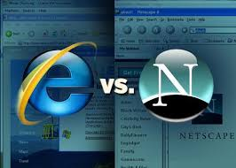

A browser is web viewing software that is used to access the internet. Prior to Microsoft IE, Netscape Navigator came into existence, it had its own GUI and it had a highly successful IPO which led to an internet boom in the early 90s. There was an intense competition between two well-known browsers Netscape’s Navigator and Microsoft’s Internet Explorer (IE). Navigator was rated highest in terms of usability and number of users. The General Public had to pay in-order to use Navigator before 1988. Netscape generated the highest revenue during that time before Microsoft IE evolved.
The Netscape
Netscape Navigators GUI had very well versed features which was beneficial to its users and helped them easily access the information they were seeking for. The languages used to build Navigator were HTML and JavaScript. Netscape came out with different improvised versions of web-browsers which was more compatible for the users to work through.
Netscape’s threat to Gates

Bill Gates, founder and CEO of Microsoft at the time, saw Netscape as a threat to their technological supremacy, since by 1993, about 90% of the world’s PCs were running Microsoft software, and Netscape were cutting into their reign. Navigator started to challenge Microsoft’s software platform supremacy, and forced Gates to rethink the impact the web would have on daily life, and forced Microsoft engineers to fight back.
The Browser War Began
Bill Gates the founder of Microsoft made highest revenue due to its OS as users required having OS to run software’s and browsers.Gates would use all Microsoft engineers on Internet Explorer, and would use their businessmen to ensure that all computer manufacturers would ship only Internet Explorer, and prevent installing anything but Internet Explorer. By September of 1997, Netscape would lose the browser wars, but Windows would face another threat: the U.S. government.
AntiTrust Case
Gates would face a massive anti-trust lawsuit, being accused of forcing consumers to use Internet Explorer, and no other web browser. At last Microsoft being split into two, Gates would pass over the CEO position to Steve Ballmer. However, the impact of this browser war would later affect other companies, such as Google.